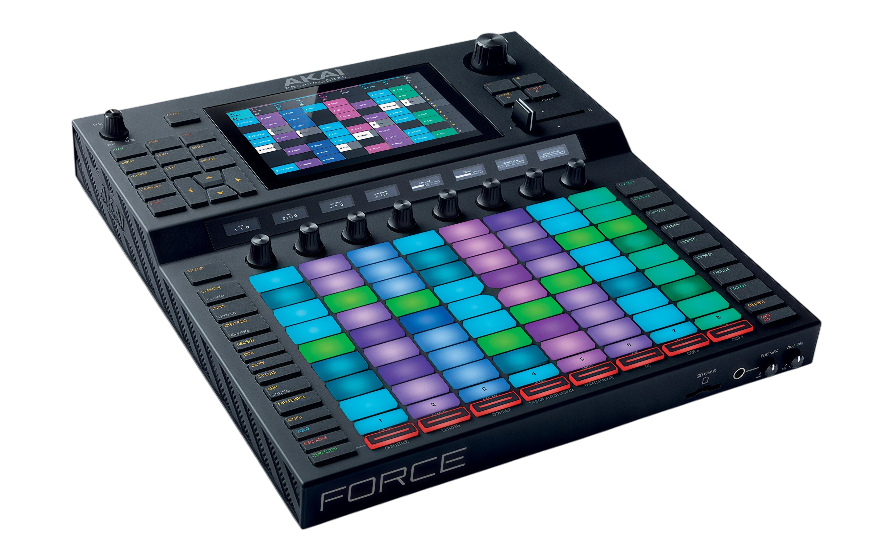
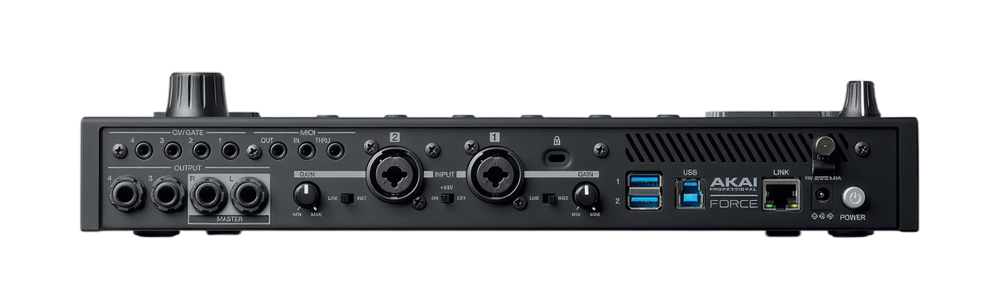
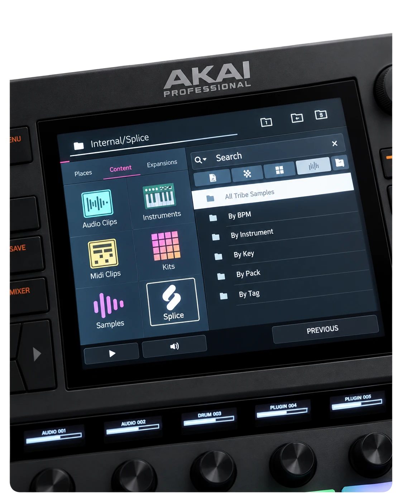
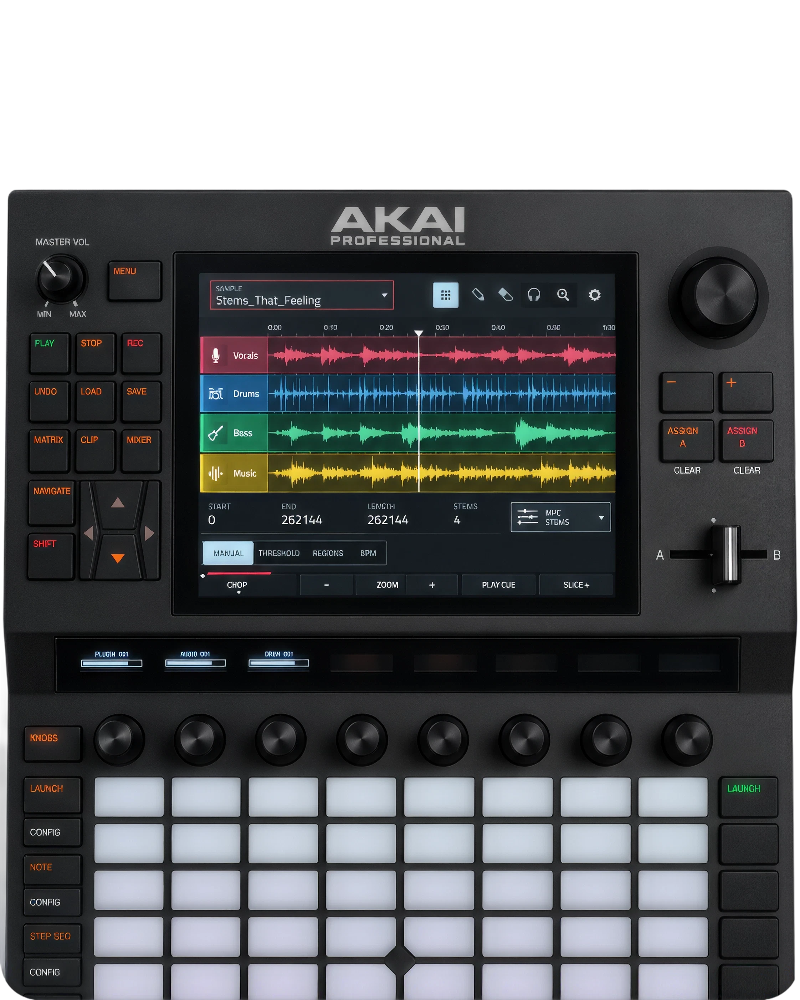
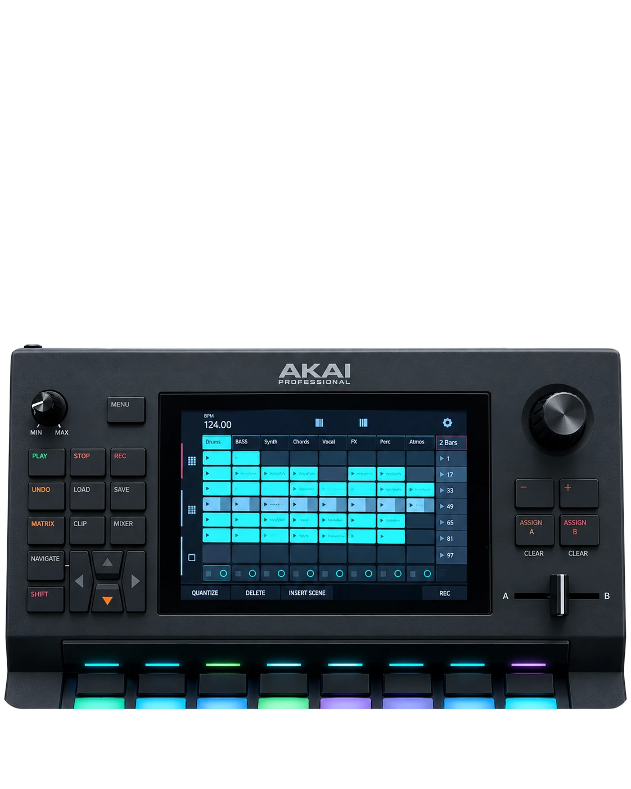
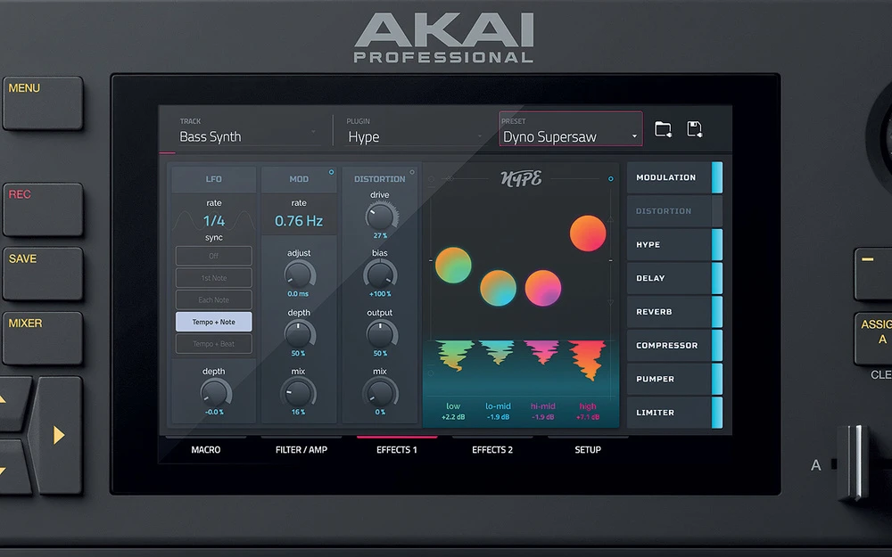
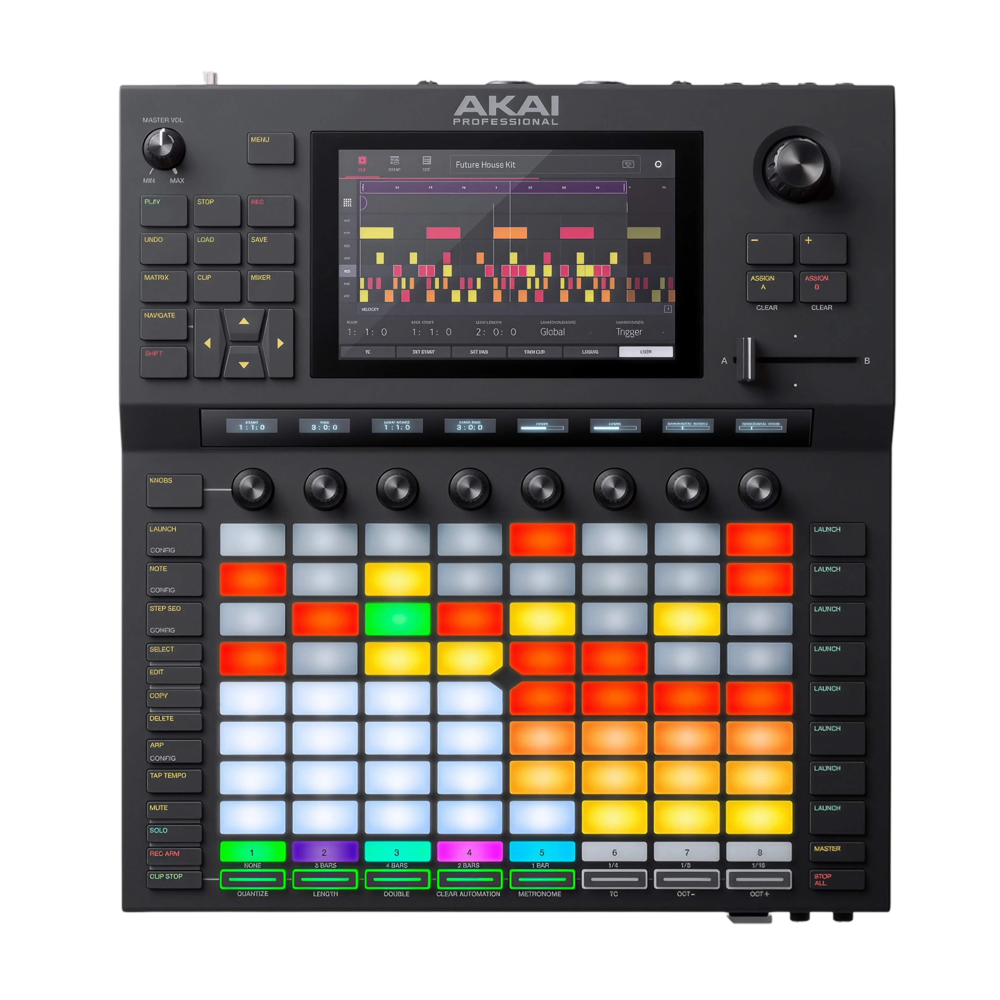

64 RGB Performance Pads. Turn ideas into performances. Play beats, launch clips, and build arrangements in real time with 64 velocity-sensitive RGB pads.

Make the music. Standalone.
Akai Force brings music production and live performance together.
Create beats, shape sounds, arrange tracks, and bring ideas to life wherever inspiration strikes. No computer required.
From your first idea to your final performance, it's all in your hands.
Take a closer look.

Audio, MIDI & CV Connections. Bring your entire setup together. Record external instruments and connect synths, controllers, and other gear through audio, MIDI, and CV/Gate connections.

Splice & Sample Import. Spend less time searching and more time creating. Sync sounds from your Splice library over Wi-Fi, or import your own samples via USB or SD card.

Sampling & MPC Stems. Transform any recording into something new. Chop and reshape samples, or use optional MPC Stems to isolate vocals, drums, bass, and other instruments.

Ableton Live Integration. Move seamlessly between hardware and software. Control Ableton Live, sync your sessions with Ableton Link, or export Force projects directly as Ableton Live Sets.

Built-in Synths & Effects. Create your signature sound from scratch. Build melodies with built-in synthesizers, shape them with effects, and produce without a computer.
Feature 1 of 6
Hear an idea become a track.
Capture a vocal phrase. Chop it, shape it,
and build something new — all on Force.
Tech specs.
- 64
- RGB performance pads
- 6.9″
- Full-color touchscreen
- 8
- Touch-sensitive knobs
Velocity- and pressure-sensitive
176 mm diagonal
360° control

- 2 in / 4 out
- Audio connections
- MIDI + CV
- Connect your setup
- USB + SD
- Expand your workflow
XLR + ¼″ TRS inputs
¼″ TRS outputs · Stereo headphones
MIDI In / Out / Thru
4 CV/Gate outputs
2 USB-A · 1 USB-B
SD card slot · Ethernet
- 350 × 389 × 72.5 mm
- Width × depth × height
- 56
- Backlit function buttons
- 19 V / 3.42 A
- Power adapter included
AKAI Force.
Play. Perform. Produce.
Standalone. No computer required.
